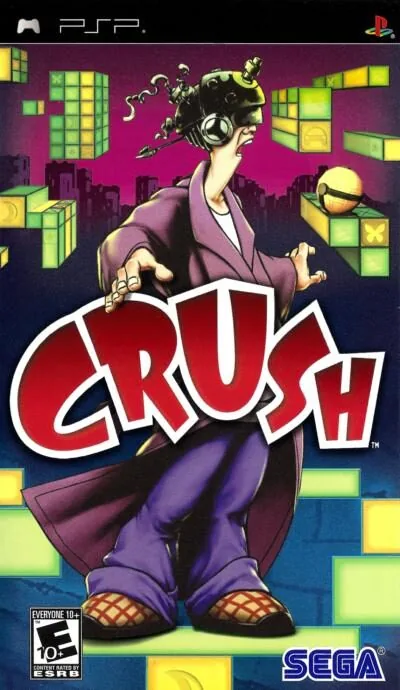

PSP
Crush
- Año: 2007
- Desarrollador: Zoe Mode
- Género: Puzle
Único en su género, Crush ofrece una experiencia de puzles nueva y valiosa, perfecta para PSP. En un mundo 3D complejo e hipnótico, el jugador usa la mecánica de «aplastar» para convertir el entorno en un juego de plataformas en 2D más sencillo. Una vez aplanado, aprovecha el espacio 2D para llegar a zonas nuevas, resolver desafíos que de otro modo serían imposibles y desbloquear objetos secretos inalcanzables en el entorno 3D.
Controles
que Danny se mueva con el joystick. Según una reseña: B (✕) salta y la cruceta mueve la cámara (en la bartop, el joystick hace las dos cosas a la vez: ⚠️ comprobar). Falta saber qué botón «aplasta» el nivel entre 2D y 3D. ¿Va fluido?
Mando de PSP. El joystick mueve la cruceta y también la palanca analógica, porque muchos juegos de PSP solo se mueven con ella.
| Panel | Juego |
|---|---|
 | ✕ |
 | ○ |
 | R |
 | □ |
 | △ |
 | L |
 | Start |
 | Select |
+  | Salir del juego |
El panel en PSP


Argumento
Recopilado de internet (2026-11-04). Lo marcado con ⚠️ no está probado en la bartop.
Danny, un joven, sufre un insomnio crónico causado por las preocupaciones, el estrés y recuerdos reprimidos. Lo ingresan en un manicomio, donde el científico loco Dr. Reubens lo trata con su aparato C.R.U.S.H., una máquina con personalidad de mujer. El casco hipnotiza a Danny, que dentro de su mente recoge sus canicas perdidas (su cordura) y se enfrenta a sus miedos en forma de monstruos: cucarachas, babosas…
Danny recuerda momentos de su vida que podrían explicar el insomnio: su primer piso y su duro trabajo de cocinero en la ciudad, un amor de verano en la playa con Tina que acabó mal, y una feria a la que fue solo de niño, donde le atacó una pandilla.
Final: como nada de eso es la causa, Reubens, harto, lo hace retroceder a cuando tenía seis años, contra su voluntad. Allí Danny descubre que le dejaron solo en casa una noche y que las sombras le traumatizaron: el miedo a la oscuridad es la verdadera causa. Reubens, asqueado de haber gastado su máquina por algo así, le da por curado… pero al despertarlo, C.R.U.S.H. parece atacar la mente de Danny, y la pantalla se funde a negro.
Fuentes
Jugabilidad
Recopilado de internet (2026-11-04). Lo marcado con ⚠️ no está probado en la bartop.
- Puzles y plataformas: cuatro lugares de la mente de Danny con diez niveles cada uno, inspirados en Tim Burton y M.C. Escher (ver «Guía de niveles»).
- «Aplastar» (crush): la idea del juego. El nivel en 3D se puede aplastar en 2D desde cualquiera de las cuatro vistas laterales (queda un plataformas en 2D) o desde arriba (queda una vista cenital). Así se unen plataformas que en 3D estaban lejos. Se puede deshacer en cualquier momento.
- Objetivo: recoger canicas, que dan puntos según su color; con los puntos necesarios se abre la salida.
- Danny puede gatear por huecos estrechos y saltar poco.
- Enemigos: se les aplasta con bloques al hacer el crush.
- Despertarse: si Danny cae, salta desde muy alto, le toca un monstruo o no para un reloj a tiempo, se despierta y vuelve al principio o al último punto de control.
Botones según las guías (⚠️ por confirmar)
| Mando de PSP | Panel | Acción |
|---|---|---|
| Palanca analógica |  | Mover a Danny |
| Cruceta | | Mover la cámara (⚠️ en la bartop el joystick hace cruceta y palanca a la vez) |
| ✕ | | Saltar |
- ⚠️ La única fuente es la reseña de un jugador; no he encontrado qué botón hace el crush.
Guía de niveles
Recopilado de internet (2026-11-04). Lo marcado con ⚠️ no está probado en la bartop.
| Lugar | Recuerdo | Niveles |
|---|---|---|
| Ciudad | Su primer piso y su trabajo de cocinero | 1 a 15 en el vídeo |
| Costa | El verano con Tina, en un hotel junto al mar | 16 a 27 |
| Feria | La feria a la que fue solo de niño | 28 a 39 |
| Habitación infantil | Su cuarto encantado de niño | 40 a 50 |
- ⚠️ La Wikipedia habla de diez niveles por lugar, pero el vídeo de «Vídeos» numera 50 en total.
- Al acabar cada nivel, la nota depende del tiempo, de cuántas veces se despertó Danny y de si cogió todas las canicas, la pieza de puzle y el trofeo escondido.
Objetos
Recopilado de internet (2026-11-04). Lo marcado con ⚠️ no está probado en la bartop.
| Objeto | Qué hace |
|---|---|
| Canica | Da puntos según su color; con los necesarios se abre la salida |
| Pieza de puzle | Desbloquea dibujos y extras en los menús |
| Pensamiento | Icono de neón en las paredes; algunos dan un salto más alto o paran el tiempo. Solo se activan si el crush no los tapa |
| Trofeo del pensamiento | Al completarlo, abre el desafío del nivel |
| Bola / cilindro | Ruedan al aplastarlos; sirven de plataforma o para pisar interruptores |
| Reloj despertador | Al aplastarlo empieza una cuenta atrás; hay que saltarle encima para pararla |
Fuentes
Trucos y secretos
Recopilado de internet (2026-11-04). Lo marcado con ⚠️ no está probado en la bartop.
- Desafíos: cada nivel tiene un modo de desafío (con tiempo y un número limitado de crush) que se abre con su trofeo.
- Galería: las piezas de puzle desbloquean dibujos y extras.
- En 3DS salió una nueva versión, Crush3D, con otra historia.
Fuentes
Longplay

Partida completa de la versión PSP (228 min), de TheRealAsim: C.R.U.S.H 2007 Full Game Walkthrough PSP Sega & Zoë Mode.
Pulsa el minuto de un nivel para ver el vídeo desde ese punto.
Niveles
| Lugar | Niveles |
|---|---|
| Ciudad | 1. The Basics ▶ 0:582. Three Colors Block ▶ 7:053. Rocks In Your Head ▶ 11:184. Nasty Things ▶ 13:465. Thought For The Day ▶ 16:386. First Crush ▶ 20:067. Early Rise ▶ 21:488. Missing Step ▶ 23:519. Push-Up ▶ 26:4610. Upstairs, Downstairs ▶ 28:3211. Gathers No Moss ▶ 31:0012. Dropping The Ball ▶ 35:3713. 7 Years Bad Luck ▶ 39:4414. Under & Over ▶ 43:1115. Tin Can Alley ▶ 46:35 |
| Costa | 16. Rocky Too ▶ 50:2717. Dirty Sheets ▶ 53:3518. Dive In! ▶ 57:2919. A Sinking Feeling ▶ 1:01:0620. Beach Volleyball ▶ 1:04:4721. On The Rocks ▶ 1:09:3922. Jolly Roger ▶ 1:13:4723. Lost On Vacation ▶ 1:17:2824. Old Giza ▶ 1:21:5925. Castle Rock ▶ 1:27:0526. Avalanche ▶ 1:32:0527. A Tale Of Two Piers ▶ 1:36:03 |
| Feria | 28. C.R.U.S.H. By Name ▶ 1:40:2129. Give And Take ▶ 1:42:4430. The Big Climb ▶ 1:46:3731. Snookered! ▶ 1:50:3632. The Ferris Wheel ▶ 1:54:1933. Rush Job ▶ 1:59:2834. Stackers ▶ 2:04:1635. Faulty Tower ▶ 2:09:2436. The Labyrinth ▶ 2:14:5237. Crazy Golf ▶ 2:19:0038. Locked In Space ▶ 2:24:4239. Rockin' The Boat ▶ 2:29:02 |
| Habitación infantil | 40. Teething Time ▶ 2:33:3741. Contains Small Parts ▶ 2:37:3142. Can I Kick It? ▶ 2:42:0343. Merry-Go-Round ▶ 2:46:4844. Gobbledygook ▶ 2:53:2845. Sinkin' Around ▶ 3:00:1646. Out The Frying Pan... ▶ 3:07:1047. Broken Zones ▶ 3:14:1448. The Pacifier ▶ 3:21:2249. Lock, Block & Barrel ▶ 3:28:4450. The End ▶ 3:37:28 |
| Otros momentos |